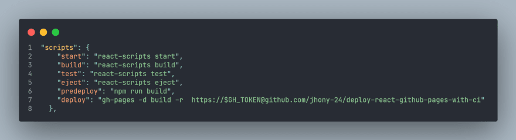
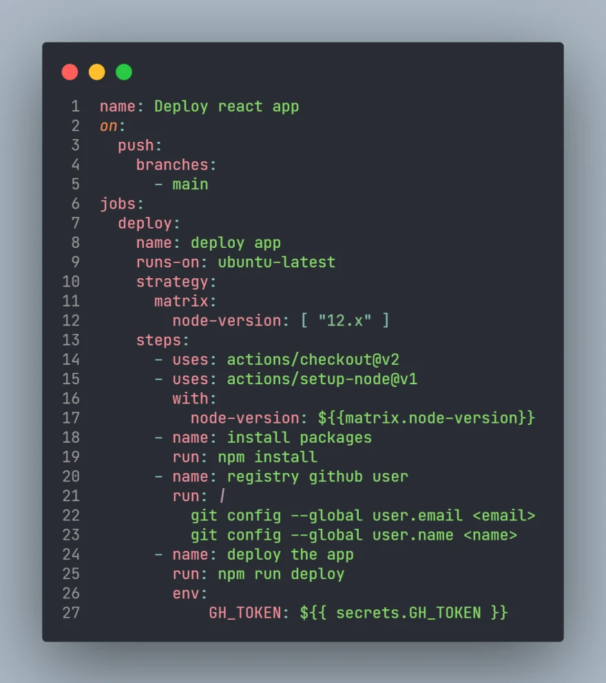
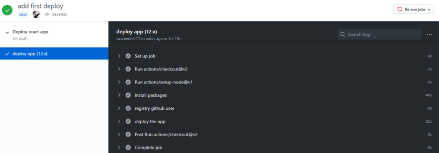
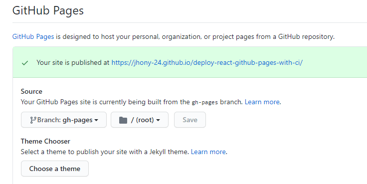

En este post te mostraré los pasos para desplegar tu aplicación realizada
en react sobre github pages. Además te mostraremos como hacer el
proceso de despliegue de forma automática cada vez que realices cambios y lo
envíes al repositorio tu aplicación web pueda verse reflejada con los nuevos
cambios.
Realizar esto te ahorrará tiempo y lo mejor, todos podrán ver los cambios que
tiene tu aplicación.
Que es github pages?
Github pages es un servicio de hosting en el cual podemos publicar páginas estaticas desarrolladas con js, css, html, en el cual podemos utilizar distintas librerías o frameworks como:
- React
- Vue
- Angular
- Svelte
En esta oportunidad veremos como subir una aplicación utilizando react con la cli create-react-app.
Comencemos
Para poder comenzar debemos tener instalado node, también la cli de react llamada
create-react-app.
1. Crear una aplicación
Utilizamos el comando y le asignamos un nombre en este caso el nombre de mi
aplicación tiene por nombre "deploy-react-github-pages-with-ci"
> create-react-app deploy-react-github-pages-with-ci
Una vez creado el proyecto podemos ver la estructura inicial la cual nos crea.
{kind=link}
También necesitamos instalar el paquete npm gh-pages como
dependencia de desarrollo.
> npm i -D gh-pages
2. Crear los archivos necesarios
En la raíz de nuestro proyecto creamos una carpeta llamada
.github, posteriormente dentro de ella otra carpeta que tenga
por nombre workflows.
Finalmente agregamos un nuevo archivo con extensión .yml, se
puede poner el nombre que se quiera, en este caso se denominará
deploy.yml.
{kind=link}
3.Configurando nuestro repositorio
Para poder acceder y publicar nuestro proyecto necesitamos primeramente obtener un token el cuál nos servirá para seguir avanzando.
Los pasos para configurar son los siguientes:
- 1. Vamos a las configuraciones de nuestra cuenta, no la del repositorio ya que si vamos allí no encontraríamos lo que buscamos.
- 2. Seleccionamos la opción Developer settings y accedemos ah aquella.
{kind=link}
- 3.Uno ves dentro nos aparecerán otras opciones entre las cuales elegimos la siguiente: Personal access tokens. Nos saldrá la opción de crear un nuevo token, lo generamos y una vez echo esto lo mantenemos copiado para usarlo en las configuraciones de nuestro repositorio.
{kind=link}
- 4. Finalmente nos vamos a la configuración de nuestro repositorio, asignamos un nombre a nuestra clave secreta y en el value copiamos nuestro token generado anteriormente
{kind=link}
Configuración de nuestra aplicación de react
- 1. Para realizar esto lo primero es ir al package.json y agregar una nueva propiedad llamada homepage en la cuál recibe como valor el nombre de donde se va desplegar nuestra aplicación. ¿Como generamos este nombre del hosting?, normalmente nuestro repositorio tiene la estructura siguiente
"github.com/jhony-24/deploy-react-github-pages-with-ci"
Si queremos usarlo para subir nuestro aplicación debemos cambiarlo por lo siguiente:
"jhony-24.github.io/deploy-react-github-pages-with-ci/"
{kind=link}
- 3. En nuestro script del package.json agregamos las siguientes líneas: predeploy y deploy las cuales nos servirán para publicar nuestra aplicación. La variable de entorno $GH_TOKEN es el token que generamos en nuestra configuración la cual nos permitirá tener acceso a nuestro repositorio. 
Configurando las acciones
En nuestro archivo creado deploy.yml procedemos a realizar la
siguientes configuración

{kind=link}
Veamos más a fondo como funciona.
name: Deploy react app
Es el principal nombre el cual se asigna a nuestro flujo de trabajo.
on:
push:
branches:
- main
Nos permite crear eventos en este caso las acciones se realizarán cuando se suba
las confirmaciones a la rama main o la principal en la cual
estamos trabajando, si queremos podemos cambiar a otra rama para hacer el
despliegue por ejemplo, crearíamos una rama deploy y cada vez
que realicemos un confirmación a esta rama se ejecutará los flujos de
trabajos.
jobs:
deploy:
name: deploy app
runs-on: ubuntu-latest
strategy:
matrix:
node-version: [ "12.x" ]
Como su nombre lo indica, son los trabajos que se realizarán.
En nuestro configuración solo tenemos un trabajo llamado deploy
, aunque se puede tener muchos más.
Dentro de cada trabajador asignamos en que maquina va a correr nuestros
comandos.
Y asignamos una matriz de versiones de node en las cuales correrá en este caso
solo usamos para la versión 12.
steps:
- uses: actions/checkout@v2
- uses: actions/setup-node@v1
with:
node-version: ${{matrix.node-version}}
Usamos las acciones de node para poder ejecutar los comandos, véalo en este caso
como si se instala programas que nos ayudan a ejecutar nuestros comandos y sean
reconocibles en el sistema.
- name: install packages
run: npm install
Instalamos nuestras dependencias.
- name: registry github user
run: |
git config --global user.email <email>
git config --global user.name <name>
Al ejecutar en una maquina el despliegue donde no estemos registrados con nuestra
cuenta no funcionaría por ello antes de hacer el despliegue nos registramos (los
pasos tienen un nombre para poder identificarlos).
- name: deploy the app
run: npm run deploy
env:
GH_TOKEN: ${{ secrets.GH_TOKEN }}
Finalmente ejecutamos el comando para publicar nuestra aplicación.
Usamos una variable de entorno llamada GH_TOKEN la cual tiene
como valor el token que anteriormente se creó y nos permitirá conectarnos a
nuestra cuenta para realizar la acción.
Enviando los cambios al repositorio
Una vez completado todo lo anterior vamos a la consola y agregamos los cambios al
repositorio.
Una vez subido los cambios al repositorio, vamos a nuestro repositorio en la
opción actions si todo marcha bien podemos ver el siguiente
resultado.

{kind=link}
Ahora como vemos nuestro aplicación? Vamos a la opción settings y buscamos Github Pages
Accedemos al link y podemos ver el siguiente resultado.
{kind=link}
{kind=link}